本日后续版本更新说明
本报告下方的60/60等结果属于添加助阵帮手与远程共鸣之前的平衡版本，作为历史对照保留。2026-10-28后续新增41条棋盘/帮手规则、金光菱形弹幕、最高远程+15%攻击/+60%攻速，当前完整实战60回合58胜/2负，中位15.16秒，并记录1次自动化桥接文件共享冲突。不能把旧版60/60和零错误当作当前版本结论。
REVGAME / REVOLUTION · 2026-10-28
六章战斗数值平衡
正常策略与失误支援验收
基于真实Unity Play、正式伤害管线和Excel导表的逐回合数据。重点同时看可取胜、双方受伤、战斗时长与成长，不以“命令成功”替代游戏成立。
2026-10-29 补测 · 六章Boss轮换与十二个专属技能
已实现并完成真实RevMCP / PC AB专项测试：每章18个通用技能加2个本章技能，正常图形对战六章均自然用出20种，Boss独立走位。
专项224条规则、71条图形断言通过；星辰风暴、黑洞、双太阳灼烧、双水流位移、沼泽吞噬与减速、2秒冰冻与无敌冰爆、十字神罚与圣域均有身体/技能/格面Shader和DOTween。12段实际动画、逐章技能名单及全部断言见详细报告。
正常图形种子1029：60回合57胜3负，六场Boss全胜，平均205.68秒；第四章262.81秒、第五章219.06秒仍偏长。三种子服务回放180回合177胜3负，18场Boss全胜、每场20招，平均167.90秒。失败和高生命视觉夹具不混入正常Boss胜率。旧全量增援首手断言仍失败；未做手机或独立Player验证。
主要结论
旧版并非所有情况都“玩家太强”：未使用开发属性加成的六牌起手容易崩盘，存活阵容撑过前段后，频密支援、高星、驻眼与大量棋子累积又形成爆发。基线60回合只赢13局，后期败局快速结束；本次收敛输出叠乘、支援频率与成长，并在低血线时给予有限治疗。
用户验收口径：合理布阵/换位下稳定取胜，明显失误允许失败；失误可有有限支援。有限样本不能数学保证所有随机牌序/所有策略必胜。当前结论以本报告种子、操作与结果为准。
| 组别 | 胜利/覆盖 | 中位秒数 | 最短/最长秒数 |
|---|---|---|---|
| 旧版基线 | 13/60 | 3.91 | 2.19/25.31 |
| 最终正常策略 | 60/60 | 27.97 | 3.12/52.50 |
| 跨章连续奖励 | 60/60 | 29.22 | 6.56/52.50 |
| 持续堆子对照 | 49/49 | 32.81 | 4.69/49.38 |
最终正常策略：29个回合出现玩家死亡，累计48次；短于8秒的回合：1-2（3.12秒）、2-2（5.94秒）；零受伤回合：1-2。团队火力递减前堆子对照的短局数量：15，加入后：2。仍有少量短局与偏轻松对局，不能宣称全部对局紧张程度已达标。
额外固定种子回放：[{"seed": 3028, "wins": 60, "rounds": 60, "failedRounds": []}, {"seed": 4028, "wins": 60, "rounds": 60, "failedRounds": []}, {"seed": 5028, "wins": 60, "rounds": 60, "failedRounds": []}]
真实操作与测量方法
项目GamePointerInput通过EventSystem按下/隔帧松开点击六张手牌与棋格，落子后断言手牌-1、占格正确。Agent先据基线盘面与结果调整战术规则，运行时由同一启发式决策器读取当时盘面，每3秒尝试一次保护受伤远程；没有LLM逐帧在线推理，不窥探未来随机值。正常策略先补前排，再为远程保留距离与连接；低血远程在敌人逼近时通过BattleLogic正式换位。阵容失衡仅刷新一次手牌。已有约14颗活棋时保留空位与手牌，不盲目塞满81格。开始、继续、奖励通过正式GM/UI同一业务入口。
完整Play用全局4倍时钟缩短测量耗时，双方AI、冷却、增益同速，报告战斗秒数取BattleElapsed；没有攻击/攻速/防御/生命开发加成或无敌。各章独立挑战与跨章连续奖励分别列示。失败不改胜负；基线为了继续覆盖后续回合使用独立六牌夹具，失败后的后续结果不是连续通关证据。
BattleHit/攻击/死亡事件记录双方实际伤害、辅助伤害与死亡。受伤占初始HP可超过100%，因为治疗/增援改变累计值；它不是单次掉血比例。截图不能替代这些数值断言。
60回合逐项对比
| 章-回合 | 旧胜方 | 旧秒数 | 新胜方 | 新秒数 | 玩家存活 | 玩家实际受伤 | 受伤/初始HP | 玩家来源伤敌 | 辅助伤敌 | 玩家死亡 | 应急治疗次数 |
|---|---|---|---|---|---|---|---|---|---|---|---|
| 1-1 | Enemy | 6.88 | Player | 9.38 | 6→6 | 37 | 11.9% | 739 | 0 | 0 | 0 |
| 1-2 | Enemy | 7.19 | Player | 3.12 | 13→13 | 0 | 0.0% | 743 | 0 | 0 | 0 |
| 1-3 | Player | 10.00 | Player | 13.12 | 14→15 | 53 | 6.2% | 4951 | 0 | 0 | 0 |
| 1-4 | Player | 9.06 | Player | 15.31 | 15→15 | 51 | 4.2% | 6848 | 0 | 0 | 0 |
| 1-5 | Player | 10.00 | Player | 16.88 | 16→16 | 45 | 4.2% | 6866 | 9 | 0 | 0 |
| 1-6 | Player | 7.81 | Player | 19.38 | 16→16 | 40 | 3.7% | 7955 | 80 | 0 | 0 |
| 1-7 | Player | 7.50 | Player | 20.62 | 16→16 | 27 | 1.9% | 8773 | 176 | 0 | 0 |
| 1-8 | Player | 6.88 | Player | 19.69 | 16→16 | 53 | 4.9% | 8548 | 168 | 0 | 0 |
| 1-9 | Player | 6.56 | Player | 17.19 | 16→16 | 65 | 6.0% | 7720 | 81 | 0 | 0 |
| 1-10 Boss | Player | 5.31 | Player | 10.94 | 16→16 | 65 | 6.0% | 4719 | 0 | 0 | 0 |
| 2-1 | Enemy | 4.06 | Player | 14.38 | 6→6 | 87 | 20.9% | 1261 | 0 | 0 | 0 |
| 2-2 | Enemy | 5.62 | Player | 5.94 | 12→12 | 7 | 1.0% | 1382 | 0 | 0 | 0 |
| 2-3 | Enemy | 6.56 | Player | 18.44 | 15→15 | 18 | 2.0% | 6877 | 78 | 0 | 0 |
| 2-4 | Enemy | 7.19 | Player | 22.50 | 15→15 | 75 | 7.7% | 9295 | 559 | 0 | 0 |
| 2-5 | Player | 25.31 | Player | 21.25 | 16→15 | 51 | 4.8% | 9897 | 300 | 1 | 0 |
| 2-6 | Enemy | 8.12 | Player | 26.88 | 15→16 | 112 | 8.1% | 11184 | 761 | 0 | 0 |
| 2-7 | Player | 13.75 | Player | 25.00 | 16→17 | 65 | 5.9% | 11315 | 678 | 0 | 0 |
| 2-8 | Player | 12.50 | Player | 28.12 | 17→18 | 95 | 7.9% | 11183 | 851 | 0 | 0 |
| 2-9 | Player | 10.31 | Player | 26.25 | 18→17 | 124 | 10.0% | 11470 | 615 | 2 | 0 |
| 2-10 Boss | Player | 10.62 | Player | 19.38 | 18→17 | 273 | 20.3% | 7566 | 1350 | 1 | 0 |
| 3-1 | Enemy | 3.44 | Player | 30.00 | 6→6 | 158 | 31.6% | 1998 | 103 | 1 | 0 |
| 3-2 | Enemy | 4.69 | Player | 12.50 | 12→12 | 17 | 2.1% | 2722 | 0 | 0 | 0 |
| 3-3 | Enemy | 6.88 | Player | 25.31 | 15→16 | 79 | 7.4% | 9623 | 468 | 0 | 0 |
| 3-4 | Enemy | 7.19 | Player | 27.81 | 17→19 | 91 | 7.3% | 12534 | 716 | 0 | 0 |
| 3-5 | Enemy | 2.81 | Player | 25.94 | 19→18 | 145 | 7.7% | 13621 | 624 | 2 | 0 |
| 3-6 | Enemy | 4.69 | Player | 32.19 | 19→20 | 101 | 4.9% | 14065 | 866 | 0 | 0 |
| 3-7 | Enemy | 4.06 | Player | 30.94 | 20→21 | 93 | 4.4% | 13990 | 1311 | 0 | 0 |
| 3-8 | Enemy | 3.44 | Player | 32.19 | 21→22 | 43 | 2.5% | 14880 | 1116 | 0 | 0 |
| 3-9 | Enemy | 4.38 | Player | 26.56 | 22→23 | 46 | 2.5% | 14347 | 749 | 0 | 0 |
| 3-10 Boss | Enemy | 3.12 | Player | 13.75 | 23→23 | 141 | 5.6% | 5704 | 0 | 0 | 0 |
| 4-1 | Enemy | 2.50 | Player | 40.94 | 6→5 | 323 | 77.1% | 2281 | 251 | 2 | 0 |
| 4-2 | Enemy | 3.12 | Player | 20.00 | 11→11 | 76 | 9.5% | 2890 | 49 | 0 | 0 |
| 4-3 | Enemy | 4.38 | Player | 31.56 | 14→14 | 171 | 15.0% | 9140 | 676 | 1 | 0 |
| 4-4 | Enemy | 2.81 | Player | 43.12 | 15→16 | 410 | 31.0% | 14542 | 2785 | 1 | 0 |
| 4-5 | Enemy | 3.75 | Player | 37.19 | 16→17 | 263 | 18.9% | 15515 | 1869 | 1 | 0 |
| 4-6 | Enemy | 5.62 | Player | 41.25 | 17→18 | 249 | 16.5% | 15899 | 1540 | 0 | 0 |
| 4-7 | Enemy | 3.12 | Player | 38.44 | 19→20 | 315 | 18.5% | 15492 | 1931 | 1 | 0 |
| 4-8 | Enemy | 3.12 | Player | 41.56 | 20→21 | 299 | 17.1% | 15871 | 1694 | 1 | 0 |
| 4-9 | Enemy | 3.44 | Player | 39.38 | 21→21 | 222 | 12.1% | 15876 | 1753 | 2 | 0 |
| 4-10 Boss | Enemy | 4.06 | Player | 19.38 | 21→21 | 388 | 20.8% | 8917 | 2073 | 0 | 0 |
| 5-1 | Enemy | 2.19 | Player | 52.50 | 6→4 | 613 | 125.1% | 2275 | 351 | 3 | 2 |
| 5-2 | Enemy | 2.19 | Player | 14.69 | 10→11 | 52 | 6.5% | 2107 | 9 | 0 | 0 |
| 5-3 | Enemy | 3.75 | Player | 31.25 | 14→15 | 139 | 13.2% | 9513 | 648 | 0 | 0 |
| 5-4 | Enemy | 3.44 | Player | 47.81 | 15→14 | 358 | 26.9% | 15488 | 2447 | 2 | 0 |
| 5-5 | Enemy | 2.19 | Player | 40.94 | 14→15 | 212 | 14.7% | 13001 | 1635 | 1 | 0 |
| 5-6 | Enemy | 2.50 | Player | 50.94 | 15→15 | 276 | 21.3% | 15292 | 2764 | 1 | 0 |
| 5-7 | Enemy | 2.50 | Player | 46.25 | 15→16 | 275 | 21.4% | 15705 | 2409 | 1 | 0 |
| 5-8 | Enemy | 2.19 | Player | 45.62 | 16→15 | 223 | 16.4% | 15668 | 2508 | 2 | 0 |
| 5-9 | Enemy | 3.44 | Player | 42.81 | 15→15 | 254 | 20.0% | 15924 | 2315 | 1 | 0 |
| 5-10 Boss | Enemy | 6.25 | Player | 27.81 | 16→15 | 485 | 35.0% | 9659 | 2696 | 2 | 0 |
| 6-1 | Enemy | 3.12 | Player | 39.38 | 6→6 | 262 | 49.2% | 2429 | 285 | 2 | 0 |
| 6-2 | Enemy | 3.44 | Player | 19.06 | 12→12 | 158 | 16.2% | 3134 | 12 | 0 | 0 |
| 6-3 | Enemy | 2.19 | Player | 40.62 | 14→12 | 368 | 30.8% | 9616 | 897 | 4 | 0 |
| 6-4 | Enemy | 3.44 | Player | 40.00 | 14→13 | 240 | 20.3% | 12235 | 1242 | 2 | 0 |
| 6-5 | Enemy | 3.44 | Player | 38.75 | 15→15 | 140 | 11.3% | 12107 | 1415 | 1 | 0 |
| 6-6 | Enemy | 2.50 | Player | 46.56 | 15→16 | 231 | 17.5% | 15878 | 2789 | 2 | 0 |
| 6-7 | Enemy | 2.19 | Player | 40.94 | 17→16 | 366 | 24.7% | 16441 | 2290 | 2 | 0 |
| 6-8 | Enemy | 2.19 | Player | 40.31 | 16→17 | 313 | 17.1% | 16248 | 2540 | 1 | 0 |
| 6-9 | Enemy | 2.19 | Player | 40.94 | 18→17 | 302 | 18.8% | 16652 | 2201 | 2 | 0 |
| 6-10 Boss | Enemy | 2.50 | Player | 46.25 | 18→17 | 1018 | 61.0% | 17604 | 3922 | 3 | 0 |
每张Excel工作表的修改建议
| 工作簿 | 工作表 | 建议与决定 |
|---|---|---|
| 关卡与奖励配置.xlsx | ChapterConfig | 普通敌兵星级阶跃改由人数/连续成长/AI承担；Boss保留大身体，星级降至二星以抑制高爆发；没有取消技能预警或擒王血线。 |
| 关卡与奖励配置.xlsx | EnemyRosterConfig | 保留重弩、弓手、法师核心与近战守阵；人数限制调整在BalanceRule，避免破坏眼阵算法。 |
| 关卡与奖励配置.xlsx | EnemyReinforceConfig | 保留规则优先级和职业，降低补兵预算、延迟第一批，防止后排尚未展开就被贴脸。 |
| 关卡与奖励配置.xlsx | RewardConfig | 保留三选一权重和解锁机制；正常策略优先新兵种。 |
| 关卡与奖励配置.xlsx | RewardBoostConfig | 章间永久攻击与攻速10%改6%，降低跨六章奖励累积。 |
| 关卡与奖励配置.xlsx | BossSkillConfig | 预警/技能数量保持；通过公共首次技能、技能间隔与章伤害成长让玩家有调整窗口。 |
| 增益与事件配置.xlsx | PrepBuffConfig | 降低远程、万箭、攻击、攻速、斩杀的叠加量；护盾从三次改两次，保留治疗和战术用途。 |
| 增益与事件配置.xlsx | BattleEventConfig | 小量攻击/提速、有限连击上限，强化治疗的喘息作用；通过参数表把倍率从5降至1。 |
| 增益与事件配置.xlsx | EventRotationConfig | 保留事件轮换顺序，以延后时间与效果量降低爆发；下一步可按濒危血线提高治疗权重，避免任意强制胜利。 |
| 战斗弹幕配置.xlsx | BattleText | 战斗弹幕素材/提示文本保持；不写死新数值，增益模板从同一行参数取数。 |
| 战斗弹幕配置.xlsx | BattleTuning | 我方远程默认2次出手降1.5，保留远程优势，防止与万箭/驻眼多次叠乘。 |
| 战斗数值参数.xlsx | BalanceRule | 集中降低5倍战斗事件、驻眼倍率、连结爆发和频密炸弹；新增有限失误治疗及团队火力递减；敌人数、输出和继承耐久按复测收敛。 |
| 棋子数值配置.xlsx | PieceConfig | 基础九种棋子的生命和攻击保持不变。本轮问题主要是倍率/增援，不建议同时改基础图鉴以免职业差异失真。 |
| 棋子数值配置.xlsx | StarConfig | 收敛二星、三星攻击与生命成长，升级仍有价值，减少残局高星叠加暴击秒杀。 |
已落地参数逐项清单
| 工作簿 | 工作表 | 字段/主键 | 修改前 | 修改后 | 理由 |
|---|---|---|---|---|---|
| 战斗数值参数.xlsx | BalanceRule | Enemy.HpBase | 2.4 | 1.2 | 收敛叠乘和开局压力，延后支援，保留正常对攻窗口；具体以复测为准 |
| 战斗数值参数.xlsx | BalanceRule | Enemy.HpMultiplier | 4.5 | 1.2 | 收敛叠乘和开局压力，延后支援，保留正常对攻窗口；具体以复测为准 |
| 战斗数值参数.xlsx | BalanceRule | Enemy.HpGrowthPerRound | 0.018 | 0.004 | 收敛叠乘和开局压力，延后支援，保留正常对攻窗口；具体以复测为准 |
| 战斗数值参数.xlsx | BalanceRule | Enemy.AttackGrowthPerRound | 0.009 | 0.002 | 收敛叠乘和开局压力，延后支援，保留正常对攻窗口；具体以复测为准 |
| 战斗数值参数.xlsx | BalanceRule | Enemy.CountBase | 9 | 6 | 收敛叠乘和开局压力，延后支援，保留正常对攻窗口；具体以复测为准 |
| 战斗数值参数.xlsx | BalanceRule | Enemy.CountMax | 21 | 12 | 收敛叠乘和开局压力，延后支援，保留正常对攻窗口；具体以复测为准 |
| 战斗数值参数.xlsx | BalanceRule | Enemy.PressureHpMax | 16 | 10 | 收敛叠乘和开局压力，延后支援，保留正常对攻窗口；具体以复测为准 |
| 战斗数值参数.xlsx | BalanceRule | Enemy.PressureAttackMax | 4 | 1.2 | 收敛叠乘和开局压力，延后支援，保留正常对攻窗口；具体以复测为准 |
| 战斗数值参数.xlsx | BalanceRule | EnemyAI.AttackRate | 1.45 | 0.3 | 收敛叠乘和开局压力，延后支援，保留正常对攻窗口；具体以复测为准 |
| 战斗数值参数.xlsx | BalanceRule | Damage.LockedMultiplier | 2 | 1.6 | 收敛叠乘和开局压力，延后支援，保留正常对攻窗口；具体以复测为准 |
| 战斗数值参数.xlsx | BalanceRule | Damage.IsolatedMultiplier | 1.2 | 1.1 | 收敛叠乘和开局压力，延后支援，保留正常对攻窗口；具体以复测为准 |
| 战斗数值参数.xlsx | BalanceRule | Damage.LinkPerCell | 0.05 | 0.025 | 收敛叠乘和开局压力，延后支援，保留正常对攻窗口；具体以复测为准 |
| 战斗数值参数.xlsx | BalanceRule | Damage.LinkMax | 0.25 | 0.15 | 收敛叠乘和开局压力，延后支援，保留正常对攻窗口；具体以复测为准 |
| 战斗数值参数.xlsx | BalanceRule | Event.EffectMultiplier | 5 | 1 | 收敛叠乘和开局压力，延后支援，保留正常对攻窗口；具体以复测为准 |
| 战斗数值参数.xlsx | BalanceRule | Event.DelaySeconds | 1.5 | 5 | 收敛叠乘和开局压力，延后支援，保留正常对攻窗口；具体以复测为准 |
| 战斗数值参数.xlsx | BalanceRule | Event.IntervalSeconds | 2 | 6 | 收敛叠乘和开局压力，延后支援，保留正常对攻窗口；具体以复测为准 |
| 战斗数值参数.xlsx | BalanceRule | Event.MaxPerRound | 1000 | 12 | 收敛叠乘和开局压力，延后支援，保留正常对攻窗口；具体以复测为准 |
| 战斗数值参数.xlsx | BalanceRule | Combat.BuffCap | 5 | 0.6 | 收敛叠乘和开局压力，延后支援，保留正常对攻窗口；具体以复测为准 |
| 战斗数值参数.xlsx | BalanceRule | Deploy.StartSeconds | 1.5 | 10 | 收敛叠乘和开局压力，延后支援，保留正常对攻窗口；具体以复测为准 |
| 战斗数值参数.xlsx | BalanceRule | Deploy.StopSeconds | 60 | 28 | 收敛叠乘和开局压力，延后支援，保留正常对攻窗口；具体以复测为准 |
| 战斗数值参数.xlsx | BalanceRule | Deploy.BaseCount | 18 | 2 | 收敛叠乘和开局压力，延后支援，保留正常对攻窗口；具体以复测为准 |
| 战斗数值参数.xlsx | BalanceRule | Deploy.LivingCap | 26 | 20 | 收敛叠乘和开局压力，延后支援，保留正常对攻窗口；具体以复测为准 |
| 战斗数值参数.xlsx | BalanceRule | Deploy.IntervalBaseSeconds | 2.25 | 8 | 收敛叠乘和开局压力，延后支援，保留正常对攻窗口；具体以复测为准 |
| 战斗数值参数.xlsx | BalanceRule | Deploy.IntervalPerLevelSeconds | 0.25 | 0.4 | 收敛叠乘和开局压力，延后支援，保留正常对攻窗口；具体以复测为准 |
| 战斗数值参数.xlsx | BalanceRule | Bomb.IntervalSeconds | 6 | 18 | 收敛叠乘和开局压力，延后支援，保留正常对攻窗口；具体以复测为准 |
| 战斗数值参数.xlsx | BalanceRule | Bomb.DamageHpRatio | 0.3 | 0.1 | 收敛叠乘和开局压力，延后支援，保留正常对攻窗口；具体以复测为准 |
| 战斗数值参数.xlsx | BalanceRule | Region.IntervalSeconds | 3 | 12 | 收敛叠乘和开局压力，延后支援，保留正常对攻窗口；具体以复测为准 |
| 战斗数值参数.xlsx | BalanceRule | Region.DamageHpRatio | 0.2 | 0.055 | 收敛叠乘和开局压力，延后支援，保留正常对攻窗口；具体以复测为准 |
| 战斗数值参数.xlsx | BalanceRule | Eye.PlayerAttackBonus | 1.5 | 0.3 | 收敛叠乘和开局压力，延后支援，保留正常对攻窗口；具体以复测为准 |
| 战斗数值参数.xlsx | BalanceRule | Eye.PlayerSpeedBonus | 1.5 | 0.25 | 收敛叠乘和开局压力，延后支援，保留正常对攻窗口；具体以复测为准 |
| 战斗数值参数.xlsx | BalanceRule | Eye.PlayerDefenseBonus | 2 | 0.5 | 收敛叠乘和开局压力，延后支援，保留正常对攻窗口；具体以复测为准 |
| 战斗数值参数.xlsx | BalanceRule | Eye.EnemyAttackBonus | 0.3 | 0.15 | 收敛叠乘和开局压力，延后支援，保留正常对攻窗口；具体以复测为准 |
| 战斗数值参数.xlsx | BalanceRule | Eye.EnemySpeedBonus | 0.5 | 0.2 | 收敛叠乘和开局压力，延后支援，保留正常对攻窗口；具体以复测为准 |
| 战斗数值参数.xlsx | BalanceRule | Eye.SupportSeconds | 2 | 10 | 收敛叠乘和开局压力，延后支援，保留正常对攻窗口；具体以复测为准 |
| 战斗数值参数.xlsx | BalanceRule | Eye.ReviveHpRatio | 1 | 0.6 | 收敛叠乘和开局压力，延后支援，保留正常对攻窗口；具体以复测为准 |
| 战斗数值参数.xlsx | BalanceRule | Eye.ReviveHealRatio | 0.6 | 0.3 | 收敛叠乘和开局压力，延后支援，保留正常对攻窗口；具体以复测为准 |
| 战斗数值参数.xlsx | BalanceRule | Battle.EyeHealRatio | 0.03 | 0.018 | 收敛叠乘和开局压力，延后支援，保留正常对攻窗口；具体以复测为准 |
| 战斗数值参数.xlsx | BalanceRule | Damage.CriticalChance | 0.25 | 0.15 | 收敛叠乘和开局压力，延后支援，保留正常对攻窗口；具体以复测为准 |
| 战斗数值参数.xlsx | BalanceRule | Damage.CriticalMultiplier | 1.5 | 1.35 | 收敛叠乘和开局压力，延后支援，保留正常对攻窗口；具体以复测为准 |
| 战斗数值参数.xlsx | BalanceRule | Upgrade.PairsPerStar | 2 | 3 | 收敛叠乘和开局压力，延后支援，保留正常对攻窗口；具体以复测为准 |
| 战斗数值参数.xlsx | BalanceRule | Prep.BuffCountMin | 4 | 3 | 收敛叠乘和开局压力，延后支援，保留正常对攻窗口；具体以复测为准 |
| 战斗数值参数.xlsx | BalanceRule | Prep.BuffCountMax | 6 | 4 | 收敛叠乘和开局压力，延后支援，保留正常对攻窗口；具体以复测为准 |
| 战斗数值参数.xlsx | BalanceRule | Boss.PowerPerChapter | 0.12 | 0.07 | 收敛叠乘和开局压力，延后支援，保留正常对攻窗口；具体以复测为准 |
| 战斗数值参数.xlsx | BalanceRule | Boss.FirstSkillSeconds | 3 | 7 | 收敛叠乘和开局压力，延后支援，保留正常对攻窗口；具体以复测为准 |
| 战斗数值参数.xlsx | BalanceRule | Boss.SkillGapSeconds | 1.5 | 3.2 | 收敛叠乘和开局压力，延后支援，保留正常对攻窗口；具体以复测为准 |
| 战斗数值参数.xlsx | BalanceRule | Boss.HpGrowthPerChapter | 0.25 | 0.16 | 收敛叠乘和开局压力，延后支援，保留正常对攻窗口；具体以复测为准 |
| 战斗数值参数.xlsx | BalanceRule | Battle.CombatBaseScale | 0.6 | 0.5 | 收敛叠乘和开局压力，延后支援，保留正常对攻窗口；具体以复测为准 |
| 关卡与奖励配置.xlsx | ChapterConfig | 3 | 2 | 1 | 普通敌兵星级保持一星，以章节成长和AI增加压力；Boss保留三星 |
| 关卡与奖励配置.xlsx | ChapterConfig | 4 | 2 | 1 | 普通敌兵星级保持一星，以章节成长和AI增加压力；Boss保留三星 |
| 关卡与奖励配置.xlsx | ChapterConfig | 5 | 3 | 1 | 普通敌兵星级保持一星，以章节成长和AI增加压力；Boss保留三星 |
| 关卡与奖励配置.xlsx | ChapterConfig | 6 | 3 | 1 | 普通敌兵星级保持一星，以章节成长和AI增加压力；Boss保留三星 |
| 关卡与奖励配置.xlsx | ChapterConfig | 1 | 3 | 2 | Boss保留大身体与独立技能，减少星级攻击爆发，不依靠秒杀玩家制造难度 |
| 关卡与奖励配置.xlsx | ChapterConfig | 2 | 3 | 2 | Boss保留大身体与独立技能，减少星级攻击爆发，不依靠秒杀玩家制造难度 |
| 关卡与奖励配置.xlsx | ChapterConfig | 3 | 3 | 2 | Boss保留大身体与独立技能，减少星级攻击爆发，不依靠秒杀玩家制造难度 |
| 关卡与奖励配置.xlsx | ChapterConfig | 4 | 3 | 2 | Boss保留大身体与独立技能，减少星级攻击爆发，不依靠秒杀玩家制造难度 |
| 关卡与奖励配置.xlsx | ChapterConfig | 5 | 3 | 2 | Boss保留大身体与独立技能，减少星级攻击爆发，不依靠秒杀玩家制造难度 |
| 关卡与奖励配置.xlsx | ChapterConfig | 6 | 3 | 2 | Boss保留大身体与独立技能，减少星级攻击爆发，不依靠秒杀玩家制造难度 |
| 棋子数值配置.xlsx | StarConfig | 2 | 2 | 1.7 | 减缓星级滚雪球，同时保留升级价值 |
| 棋子数值配置.xlsx | StarConfig | 2 | 1.8 | 1.5 | 减缓高星爆发，不提高玩家基础数值 |
| 棋子数值配置.xlsx | StarConfig | 3 | 3.6 | 2.8 | 减缓星级滚雪球，同时保留升级价值 |
| 棋子数值配置.xlsx | StarConfig | 3 | 3.2 | 2.3 | 减缓高星爆发，不提高玩家基础数值 |
| 增益与事件配置.xlsx | PrepBuffConfig | Attack | 0.25 | 0.15 | 降低强攻/远程/护盾叠加爆发，保留不同增益的策略用途 |
| 增益与事件配置.xlsx | PrepBuffConfig | Haste | 0.25 | 0.15 | 降低强攻/远程/护盾叠加爆发，保留不同增益的策略用途 |
| 增益与事件配置.xlsx | PrepBuffConfig | Ranged | 0.35 | 0.18 | 降低强攻/远程/护盾叠加爆发，保留不同增益的策略用途 |
| 增益与事件配置.xlsx | PrepBuffConfig | Execution | 0.5 | 0.25 | 降低强攻/远程/护盾叠加爆发，保留不同增益的策略用途 |
| 增益与事件配置.xlsx | PrepBuffConfig | EyePower | 0.3 | 0.18 | 降低强攻/远程/护盾叠加爆发，保留不同增益的策略用途 |
| 增益与事件配置.xlsx | PrepBuffConfig | ArrowVolley | 1 | 0.35 | 降低强攻/远程/护盾叠加爆发，保留不同增益的策略用途 |
| 增益与事件配置.xlsx | PrepBuffConfig | LifeSteal | 0.2 | 0.12 | 降低强攻/远程/护盾叠加爆发，保留不同增益的策略用途 |
| 增益与事件配置.xlsx | PrepBuffConfig | Regeneration | 0.04 | 0.025 | 降低强攻/远程/护盾叠加爆发，保留不同增益的策略用途 |
| 增益与事件配置.xlsx | PrepBuffConfig | Shields | 3 | 2 | 降低强攻/远程/护盾叠加爆发，保留不同增益的策略用途 |
| 增益与事件配置.xlsx | PrepBuffConfig | Shields | 三重护盾 | 双重护盾 | 标题同步新的抵挡次数 |
| 增益与事件配置.xlsx | BattleEventConfig | Attack | 0.15 | 0.1 | 小量持续援助，失误时给喘息，避免每两秒大幅成长 |
| 增益与事件配置.xlsx | BattleEventConfig | Defense | 0.15 | 0.16 | 小量持续援助，失误时给喘息，避免每两秒大幅成长 |
| 增益与事件配置.xlsx | BattleEventConfig | Haste | 0.1 | 0.08 | 小量持续援助，失误时给喘息，避免每两秒大幅成长 |
| 增益与事件配置.xlsx | BattleEventConfig | Vitality | 0.15 | 0.12 | 小量持续援助，失误时给喘息，避免每两秒大幅成长 |
| 增益与事件配置.xlsx | BattleEventConfig | Combo | 0.2 | 0.12 | 小量持续援助，失误时给喘息，避免每两秒大幅成长 |
| 增益与事件配置.xlsx | BattleEventConfig | Heal | 0.1 | 0.18 | 小量持续援助，失误时给喘息，避免每两秒大幅成长 |
| 增益与事件配置.xlsx | BattleEventConfig | Artillery | 0.12 | 0.1 | 小量持续援助，失误时给喘息，避免每两秒大幅成长 |
| 增益与事件配置.xlsx | BattleEventConfig | Combo | 0.5 | 0.35 | 连击累计封顶收敛 |
| 关卡与奖励配置.xlsx | RewardBoostConfig | Attack | 0.1 | 0.06 | 保留章间成长，减少连续章节叠加火力 |
| 关卡与奖励配置.xlsx | RewardBoostConfig | Speed | 0.1 | 0.06 | 保留章间成长，减少连续章节叠加火力 |
| 战斗弹幕配置.xlsx | BattleTuning | PlayerRangedActionsPerTick | 2 | 1.5 | 远程仍比近战快，但降低默认双倍出手与万箭齐发叠乘 |
新增团队火力软上限：Player.FirepowerSoftCount=14，Exponent=1.25，MinScale=0.18。超过14颗活棋时单位普通攻击乘max(0.18,(14/活棋数)^1.25)，棋子生命与占格不变，敌方和环境伤害不套此倍率。
新增失误支援：Assist.EmergencyFirstSeconds=5，IntervalSeconds=8，HpRatio=0.6，HealRatio=0.32，MaxCount=3。仅存活且低血线队伍触发，不复活、不清敌、不延迟真实失败。已用独立规则断言验证上限、冷却、未到时刻、全灭与辅助关闭路径。
导表、框架与风险边界
五个工作簿通过CLI脚本调用artifact-tool编辑，保持已有格式并逐项核对未授权单元格；82个原单元格修改以及8条新增参数，保留表头/类型/主键/模板，框架excel.export导出14张表及生成C#，通过框架excel.export导出14张表，修改数值后冷启真实PC AB复测。原始备份与机器证据在忽略目录.codex/work/；文档仅HTML与必要截图/GIF，没有ZIP。
Revolution的RevServices、RevUI、RevTask、RevEvent、RevPool与RevActionSequence在真实60回合/跨章流程中协作。未改框架内核。测试过程中修复Boss图集尚未绑定就写入参数块的就绪问题，保护失败路径；这属于资源门禁，不改变伤害/胜负。
旧版与最终策略存在一次刷新手牌/保留空位的操作差异，不是纯数值单变量A/B；火力递减前后堆子对照使用相同策略作为专项比较。短于8秒的局、零受伤局仍逐项展示，不能把高胜率当作所有局都有紧张感。Android仅资源构建与Shader门禁，未测设备帧率/温度。当前策略不是专业玩家穷举；还应通过人工试玩评价紧张程度。
第1章 · 实际交战证据
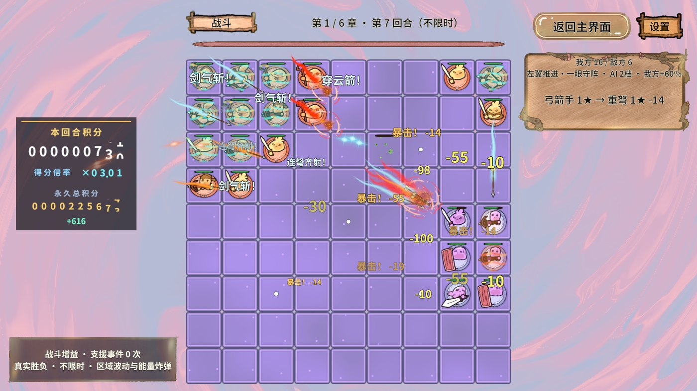
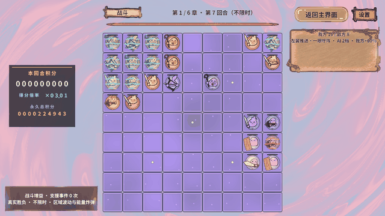
动图是开局、交战与结算的时间切片，间隔为游戏内10秒；它展示血线与阵容变化，不冒充连续实时录像。
第2章 · 实际交战证据
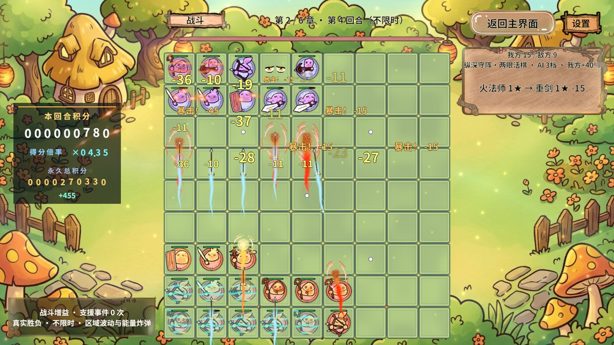
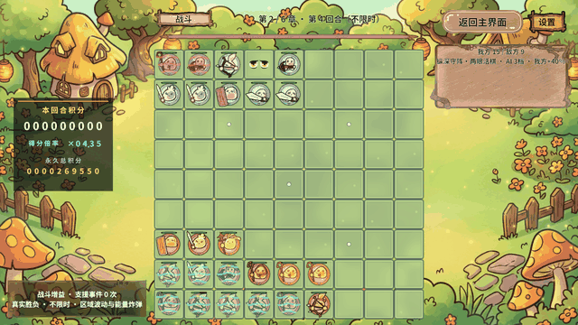
动图是开局、交战与结算的时间切片，间隔为游戏内10秒；它展示血线与阵容变化，不冒充连续实时录像。
第3章 · 实际交战证据
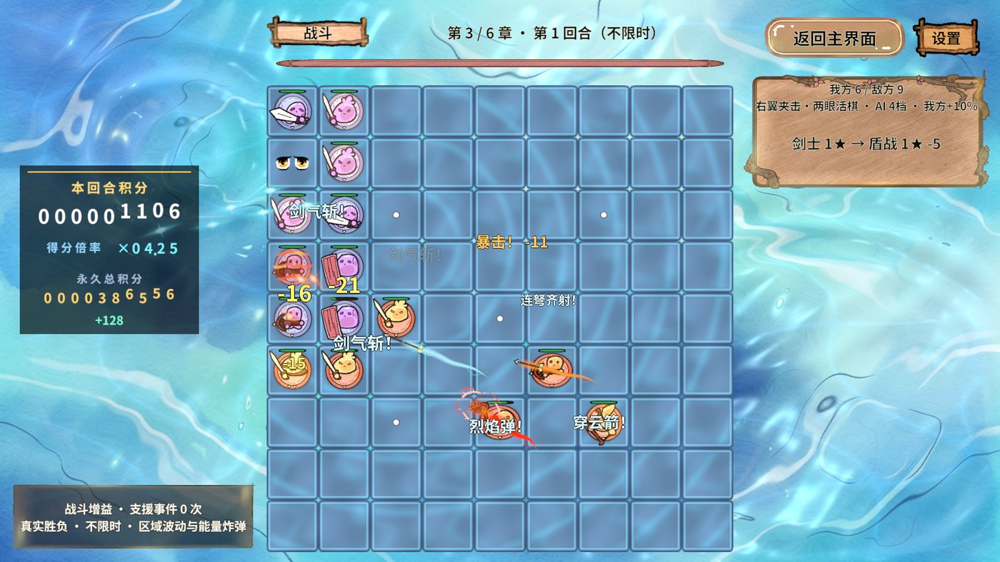
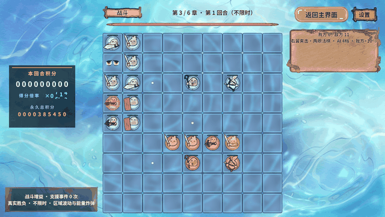
动图是开局、交战与结算的时间切片，间隔为游戏内10秒；它展示血线与阵容变化，不冒充连续实时录像。
第4章 · 实际交战证据
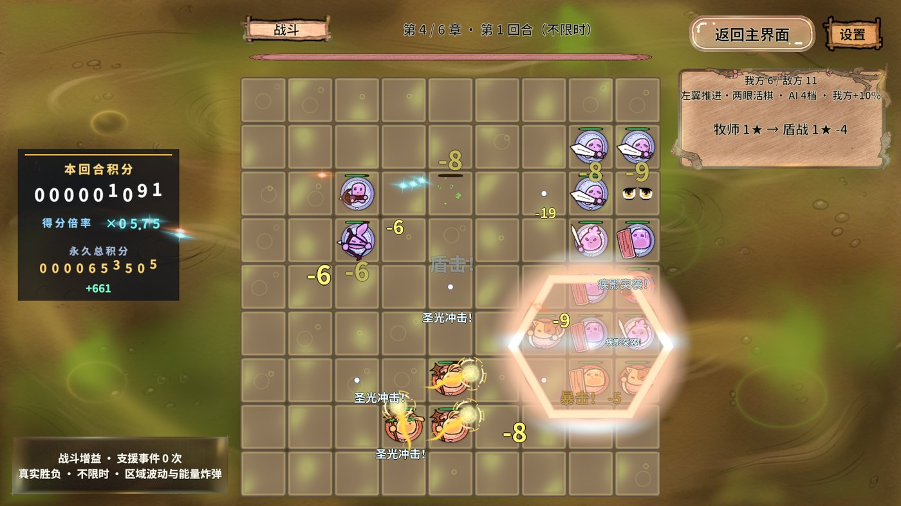
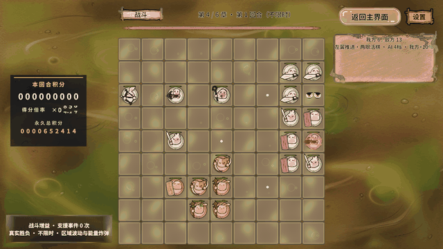
动图是开局、交战与结算的时间切片，间隔为游戏内10秒；它展示血线与阵容变化，不冒充连续实时录像。
第5章 · 实际交战证据
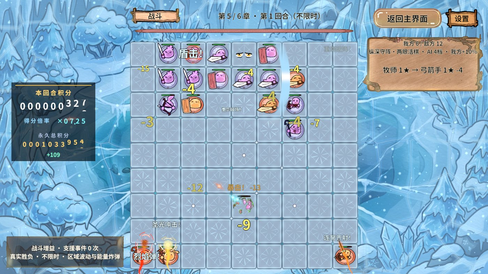
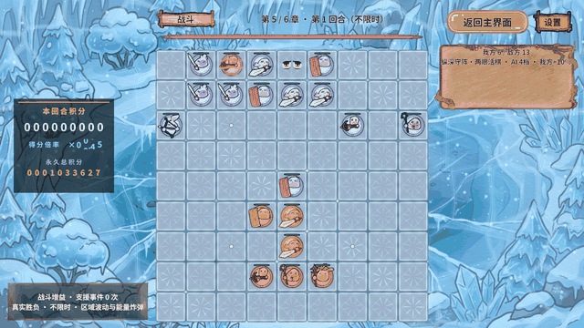
动图是开局、交战与结算的时间切片，间隔为游戏内10秒；它展示血线与阵容变化，不冒充连续实时录像。
第6章 · 实际交战证据
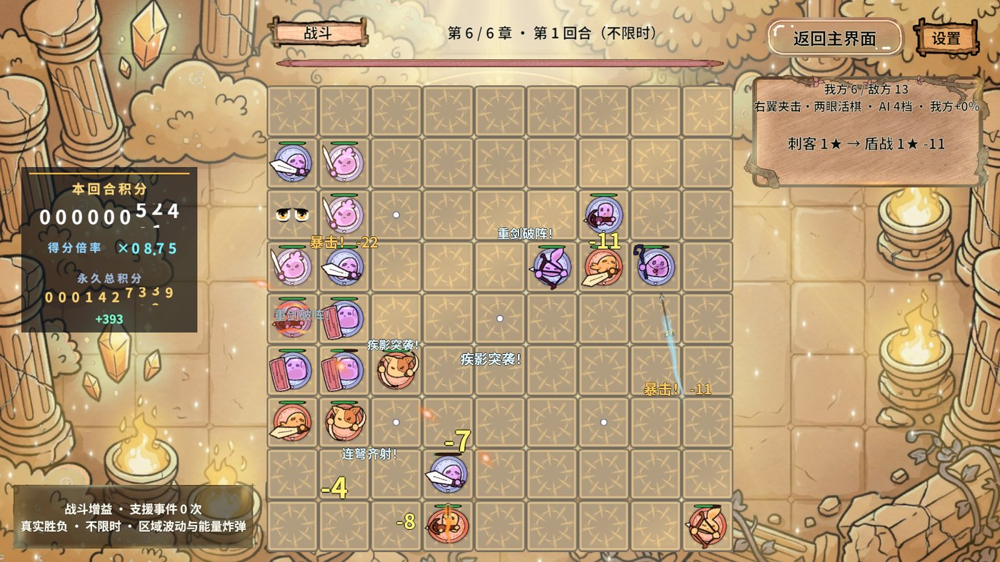
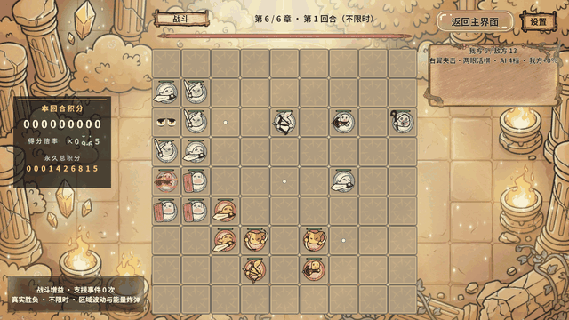
动图是开局、交战与结算的时间切片，间隔为游戏内10秒；它展示血线与阵容变化，不冒充连续实时录像。
可重复调用
RevGame/数值测试开始 1028 false 1 6 final RevGame/数值测试状态 RevGame/数值测试取消 RevGame/数值盘面 RevGame/数值建议
正式GM仅开发态注册；测试开始必须先通过game.story.test-arm设置隔离进度并启动Play。数字仅控制种子/测试章号，不能修改攻击生命或保证胜负。完成后恢复原场景、时间倍率并关闭测试隔离。
明显失误与正常速度抽测
明显失误对照：每章首回合只落两张真实手牌，其余四张不下，不加开发属性、不开无敌。第一章得到三次治疗后获胜，其余章节即使获得有限治疗也失败，验证支援不会强制通关。
| 章节首轮 | 落牌数 | 真实胜方 | 秒数 | 应急治疗 | 玩家受伤 |
|---|---|---|---|---|---|
| 1-1 | 2 | Player | 45.94 | 3 | 275 |
| 2-1 | 2 | Enemy | 20.62 | 2 | 271 |
| 3-1 | 2 | Enemy | 23.12 | 2 | 347 |
| 4-1 | 2 | Enemy | 12.50 | 1 | 124 |
| 5-1 | 2 | Enemy | 21.88 | 2 | 365 |
| 6-1 | 2 | Enemy | 34.69 | 2 | 502 |
正常速度抽测：3/3获胜，timeScale=1，中位9.38秒，Unity新增错误0。正常速度连拍见下方动图；它不替代完整60回合的数据。
尚未解决的拥挤边界
持续打满手牌的对照实际只完成49回合，第五章第9轮之后，棋盘无足够完整区域生成3×3 Boss及护卫，下一回合请求被拒绝，当前模型保持不变。这是测试失败，不能计为60回合完成或胜利。
建议后续明确拥挤时玩家可回收/调整阵容的设计，再做UI引导；本轮没有自动删除玩家棋子或强塞Boss，因为会改变用户规则。已完成的堆子对照短局由15降至2，证明团队火力递减改善秒杀，但拥挤玩法边界仍需产品决策。